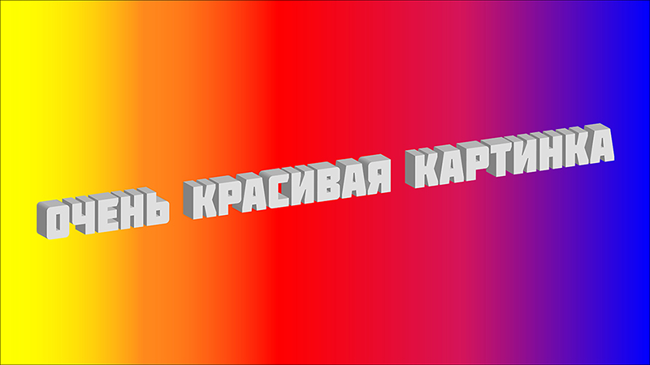

Блок
||| Страница делится на хэдер, основную часть и футер, что, в принципе, и ежу было понятно . Блоков может быть сколько угодно. Их можно разделять тегом <div> (Разберись когда можно, а когда нужно!). Практически все теги имеют открывающий элемент и закрывающий, например <div> </div>.Об остальных тегах немного позже |||
Абзац [параграф]
||| Для того чтобы текст заключить в абзац (параграф), нужно
использовать тег <p>.
Да, латинская
буква "р",сокращение от слова PARAGRAPH ) Кстати, если вдруг нужно внутри абзаца сделать
перенос на новую
строку, как, например, сейчас
тогда используется тег <br>, который, кстати, закрывать не
надо|||
Заголовок
||| Заголовки бывают шести видов. <h1> - главный, его можно использовать только один раз на странице. Остальные <h2-h6> второстепенные, уменьшаются с увелечением номера (Вот это я намутил)) Но это не на долго, т.к. скоро мы будем скидывать настройки по умолчанию и задавать стили чему угодно, в т.ч. заголовакм (но это не точно)|||
заголовок №2
заголовок №3
заголовок №4
заголовок №5
заголовок №6
Выделение
||| Выделение есть двух видов : обычное, для него используется тег <mark>, оно выделяет текст жёлтым цветом, и это никак нельзя изменить. И выделение стилем при помощи тега <span>, которое мы научимся делать немного позже ( Сейчас слово "позже" обёрнуто тегом <span>, но поскольку я пока не использую CSS и не назначил никакого стиля этому выделению, никаких изменений не видно - было написано в прошлой домашке, но сейчас-то я его задизайню, например фиолетовым ))) |||
Списки
||| Списки есть двух видов : маркированные и нумерованные |||
Маркированные:
- пункт 1
- пункт 2
- пункт 3
- тут может быть подпункт
- в котором может быть ещё подпункт
- и так может продолжаться очень долго
- в котором может быть ещё подпункт
- тут может быть подпункт
- пункт 4
- пункт 5
Нумерованные:
- пункт 1
- пункт 2
- пункт 3
- пункт 4
- пункт 5
Ссылки
||| Ссылки могут быть внутренние (внутри страницы) и внешние с переходом на другую страницу или даже сайт, например ) |||
Изображения
| Для вывода изображений используется тег <img>, в атрибутах которго указывается путь к изображению <src> (source) и альтернативный текст <alt>, для случаев если изображение не выводится по каким-либо причинам. Кстати, этот тег строчный, так что не забывай об этом!|

Подсказка
Есть ещё такая прикольная тема как посказка, которую можно сделать с помощью атрибута title, единственная ( я надеюсь ) лажа с ним это то, что он стандартный и его нельзя будет задизайнить, тем не менее, например :
В блоке main я использовал теги <div> для разделения на подблоки (они выглядят у меня как заголовок с каким-нибудь текстом)
-----------------------------------------------------------------------------------------
---------------------- здесь заканчивается главный блок ----------------------
-----------------------------------------------------------------------------------------